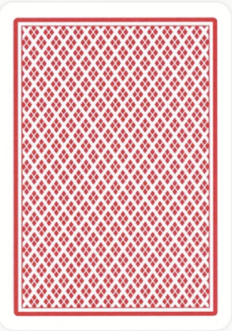

<html lang="en">
<head>
    <meta charset="UTF-8">
    <meta name="viewport" content="width=device-width, initial-scale=1.0">
    <title>Klokke Kabal</title>
    <style>
        body {
            margin: 0;
            padding: 0;
            display: flex;
            justify-content: center;
            align-items: center;
            height: 120vh;
        }

        .container {
            display: flex;
            justify-content: center;
            align-items: center;
            width: 100%;
            height: 100%;
            position: relative; /* setter containeren som et slags referansepunkt for de absolutte posisjonene */
        }

        .card {
            width: 100px;
            height: 140px;
            position: absolute; /* gjør at kortene  plasseres på spesifikke steder */
            cursor: pointer; /* viser at kortene kan klikkes på */
        }

        .card img {
            width: 100%;
            height: 100%;
        }
    </style>
</head>
<body>
    <div class="container"></div>

    <script>
        const container = document.querySelector('.container'); 
        const suits = ["hearts", "diamonds", "spades", "clubs"]; 
        const deck = []; /* deck = [] lager en liste som skal inneholde alle kortene */

        for (const suit of suits) {
            for (let i = 1; i <= 13; i++) {
                deck.push({ suit, value: i }); /* lager et kort med farge (suit) og verdi (value) og legger det inn i listen over kort */
            }
        }

        deck.sort(() => Math.random() - 0.5); /* det blander kortstokken tilfeldig */

        const piles = Array.from({ length: 13 }, () => []); /*lager en liste med 13 tomme bunker for kortene*/
        deck.forEach((card, index) => { /*ser på hvert kort i deck, hvor card er kortet og index er posisjonen*/
            piles[index % 13].push(card); /* fordeler kortene likt mellom de 13 bunkene */
        });

        function flipCard(event) {
            const cardElement = event.currentTarget;
            const isFlipped = cardElement.dataset.flipped === 'true'; /* sjekker om kortet allerede er snudd */
            const card = JSON.parse(cardElement.dataset.card); /* henter kortdata fra data-card på kortet*/

            cardElement.querySelector('img').src = isFlipped ? 'kort.bak.jpg' : `kortstokk/${card.value}_of_${card.suit}.png`; /* bytter mellom bakside og fremside av kortet */
            cardElement.dataset.flipped = !isFlipped; /* oppdaterer flipp-statusen til kortet */
        }

        piles.forEach((pile, i) => {
            let x, y;
            if (i === 0) {
                x = 0;
                y = 0;
            } else {
                const angle = ((i - 1) / 12) * (2 * Math.PI); /* beregner vinkel for kortplassering rundt en sirkel */
                x = 300 * Math.cos(angle); /* setter x-posisjon basert på vinkel og radius */
                y = 300 * Math.sin(angle); /*setter y-posisjon basert på vinkel og radius */
            }

            pile.forEach((card, index) => {
                const cardElement = document.createElement('div'); /*lager et nytt div-element for kortet */
                cardElement.className = 'card'; /* legger til CSS-klassen for kortet */
                cardElement.dataset.card = JSON.stringify(card); /* lagrer kortdata i et data-attributt */
                cardElement.dataset.flipped = 'false'; /* setter kortet som usnudd ved start */
                cardElement.style.transform = `translate(${x}px, ${y}px) translateY(${index * 5}px)`; /* plasserer kortet i sirkelformasjon */
                cardElement.innerHTML = ``; /* setter kortbildet som bakside først */
                cardElement.addEventListener('click', flipCard); /* legger til klikk-event for å snu kortet */
                container.appendChild(cardElement); /* legger kortet inn i containeren */
            });
        });
    </script>
</body>
</html>
